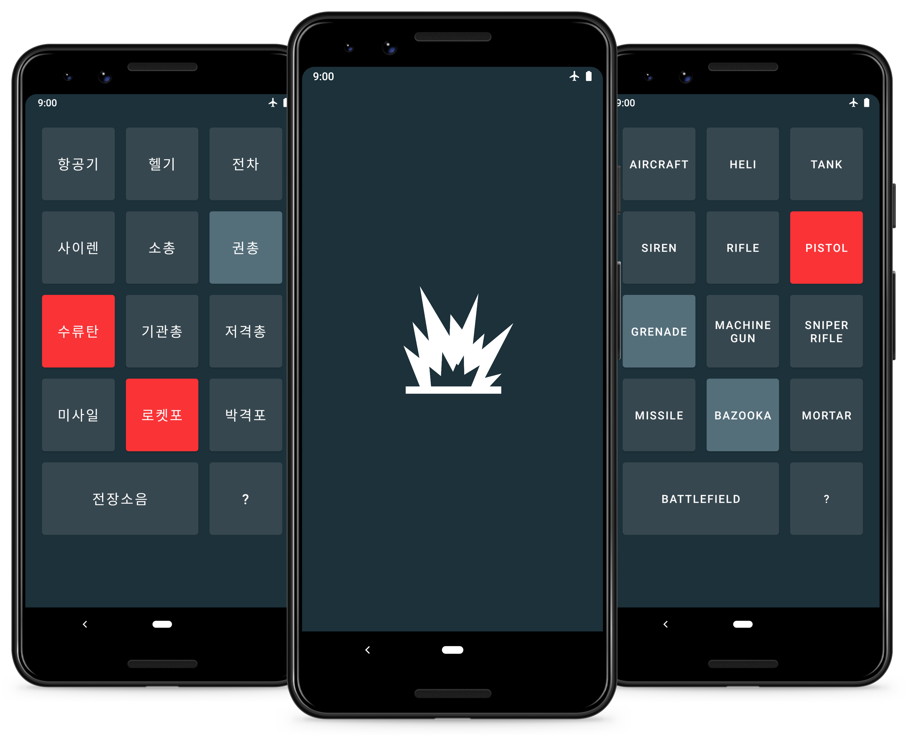

WarSound
A cost-effective solution to flexible military training

OVERVIEW
WarSound is an Android application that I proposed and developed while I was serving in the Republic of Korea Army. It is a cost-effective military training solution that does not require expensive equipment to simulate realistic combat experience. All it needs is a good set of speakers that projects sound onto the training field.
WarSound currently has more than 5K+ downloads and a 4.9/5.0 rating on Google Play.
PROBLEM
Large size military training facilities in South Korea are well equipped to simulate diverse war scenarios. These facilities accommodate thousands of soldiers to coordinate large scale military exercises. However, the equipment necessary to support these exercises are incredibly costly and do not scale down to small size training facilities.
CHALLENGE
How can we...
Cost-effective
Support realistic combat experience at low cost?
Flexible
Simulate diverse combat scenarios at one's fingertip?
SOLUTION
All training facilities in South Korea have audio systems that project sound onto the field. These audio systems can connect to not only expensive equipment that supports large scale exercises but also easily accessible smartphones. A single audio cable and a perfect app are sufficient to turn a smartphone into an inexpensive yet flexible control center for realistic combat training.